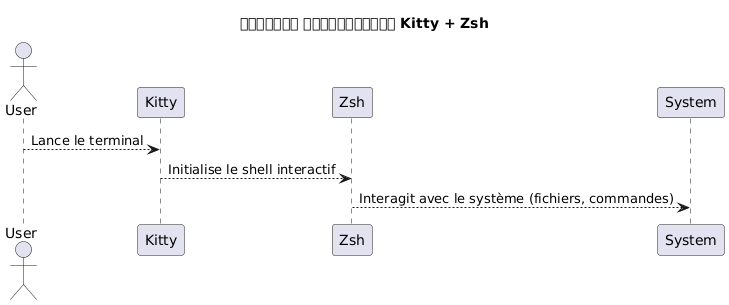
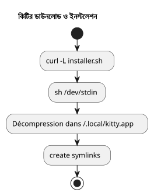
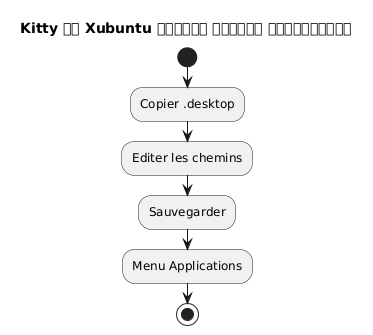
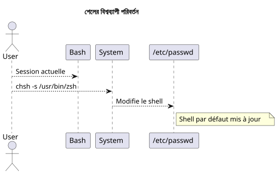
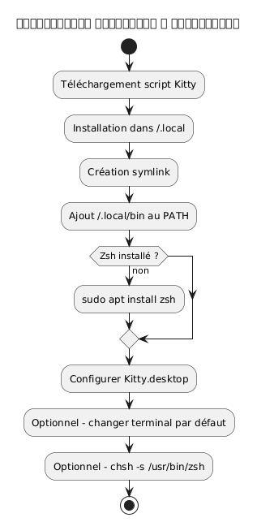
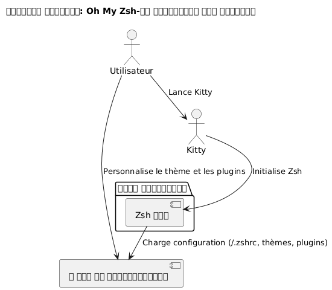
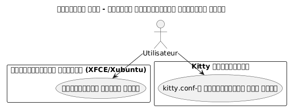
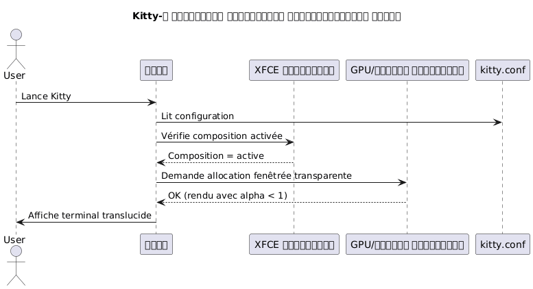

Kitty টার্মিনাল ইন্সটল করুন এবং Zsh কে Xubuntu-এ ডিফল্ট শেল হিসেবে কনফিগার করুন
Publié le 07 May 2026 Mis à jour le 2026-05-07
- Kitty এবং Zsh কেন বেছে নবেন?
- সিস্টেমের প্রয়োজনীয়তা
- ডাউনলোড এবং কিটির ইনস্টলেশন
- Xubuntu-এ Kitty-র একীকরণ
- Zsh ইনস্টলেশন
- Zshকে ডিফল্ট শেল sebagai সেট করুন
- Zshের কনফিগারেশন (ঐচ্ছিক)
- সম্পূর্ণ ওয়ার্কফ্লো সারাংশ
- শেষ পরীক্ষা
- Oh My Zsh এর ইনস্টলেশন ও কনফিগারেশন
- কিটি-এ ট্রান্স್ಲুসিডিটি সক্রিয় করুন
- শব্দযুক্ত বিপ নিষ্ক্রিয় করুন
- Kitty আপডেট
- উদ্ধৃতি
- নিষ্কর্ষ
এই গাইড ধাপে ধাপে কীভাবে Xubuntu-তে kitty টার্মিনাল ইনস্টল করতে হয়, এটি সঠিকভাবে কনফিগার করতে হয়, এবং bash-কে zsh-তে প্রতিস্থাপন করে ডিফল্ট শেল হিসাবে সেট করতে হয়, এই বিষয়গুলি ব্যাখ্যা করে। কিটি প্রোজেক্ট এখানে উপলব্ধ: https://github.com/kovidgoyal/kitty.
_ Kitty একটি আধুনিক, দ্রুত এবং কনফিগারযোগ্য টার্মিনাল, বিশেষভাবে উন্নত ডেভেলপারদের জন্য উপযুক্ত। _
Kitty এবং Zsh কেন বেছে নবেন?
Kitty উদ্ভuted হয়:
-
GPU ত্বরন দিয়ে উত্কৃষ্ট কর্মক্ষমতা,
-
একটি পাঠ্য ফাইল-ভিত্তিক কনফিগারেশন যা সম্পূর্ণরূপে একক ফাইলে ভিত্তি পড়ে,
-
ফন্ট এবং লিগেচারদের দারুণ সমর্থন
Zsh নিজে নিজে একটি শক্তিশালী ইন্টারেক্টিভ শেল যা প্রদান করে :
-
বুদ্ধিমান পূরন,
-
একটি কাস্টমাইজযোগ্য প্রম্পট,
-
bashের সাথে ব্যাপক সামঞ্জস্য.
Kitty ও Zsh একত্রিত করলে আপনি একটি উত্পাদনশীল এবং শোভন পরিবেশ পাবেন।

|
এই গাইড ইচ্ছামত স্ক্রিপ্টের মাধ্যমে ইনস্টলেশন এবং Xubuntu পর্যন্ত সীমাবদ্ধ রাখা হয়েছে। |
সিস্টেমের প্রয়োজনীয়তা
শুরু করার আগে, নিশ্চিত করুন যে আপনার :
-
Xubuntu ইনস্টল করা হয়েছে,
-
ইন্টারনেট অ্যাক্সেস,
-
একটি কাজের যোগ্য বাশ শেল স্ক্রিপ্ট চালানোর জন্য
আপনার পরিবেশ পরীক্ষা করুন :
uname -a
lsb_release -aডাউনলোড এবং কিটির ইনস্টলেশন
Kitty একটি অফিসিয়াল স্ক্রিপ্টের মাধ্যমে ইন্সটলের পরামর্শ দেয় যা ফাইলগুলো রাখে`~/.local/kitty.app`.
|
এই পদ্ধতি প্যাকেজ ম্যানেজারের থেকে স্বাধীন (না`apt`) |
ইনস্টলেশন স্ক্রিপ্ট ডাউনলোড করুন
অনুসারিত কমান্ডটি চালু করুন:
curl -L https://sw.kovidgoyal.net/kitty/installer.sh | sh /dev/stdinএই কমান্ড সম্পাদন করে:
-
বাইনারি ডাউনলোড,
-
নিষ্কাশন মধ্যে`~/.local/kitty.app`,
-
সিম্বলিক লিঙ্কের তৈরি।

সিম্বলিক লিংকদের সৃষ্টি
আনুমান করতে সক্ষম হওয়ার জন্য`kitty`টার্মিনাল থেকে, একটি সিম্বলিক লিঙ্ক তৈরি করুন:
ln -s ~/.local/kitty.app/bin/kitty ~/.local/bin/kittyযোগ করুন`~/.local/bin`আপনার PATH-এ যোগ করুন যদি এখনো না করা হয় :
echo 'export PATH="$HOME/.local/bin:$PATH"' >> ~/.zshrc
source ~/.zshrcআপনি ইনস্টলেশন পরীক্ষা করতে পারেন:
kitty --versionXubuntu-এ Kitty-র একীকরণ
কটি অ্যাপ্লিকেশন মেনুতে প্রদর্শিত হওয়ার জন্য :
ডেস্কটপ ফাইল কপি করুন
ফাইলটি কপি করুন`.desktop`제공 :
cp ~/.local/kitty.app/share/applications/kitty.desktop ~/.local/share/applications/ডেস্কটপ ফাইলটি পরিবর্তন করুন
ফাইলটি সম্পাদনা করুন :
nano ~/.local/share/applications/kitty.desktopনিম্নলিখিত লাইনগুলো পরীক্ষা করুন অথবা পরিবর্তন করুন :
[Desktop Entry]
Version=1.0
Type=Application
Name=Kitty Terminal
Comment=Fast GPU-based terminal emulator
Exec=/home/$USER/.local/kitty.app/bin/kitty
Icon=kitty
Categories=System;TerminalEmulator;বদল করুন`YOURUSER`আপনার ব্যবহারকারীর নাম

কিটিকে ডিফল্ট টার্মিনাল হিসেবে সংযুক্ত করুন (ঐচ্ছিক)
কিতিকে ডিফল্ট টার্মিনাল হিসেবে চালু করা হলে :
sudo update-alternatives --install /usr/bin/x-terminal-emulator x-terminal-emulator ~/.local/kitty.app/bin/kitty 50
sudo update-alternatives --config x-terminal-emulatorনির্বাচন করুন`kitty`প্রস্তাবিত মেনুতে।
Zsh ইনস্টলেশন
যদি Zsh এখনও ইনস্টল করা হয়নি, চালান :
sudo apt install zshসেটআপ যাচাই:
zsh --versionZshকে ডিফল্ট শেল sebagai সেট করুন
আপনি আপনার শেলটি বিশ্বব্যাপীভাবে পরিবর্তন করতে পারেন শুধুমাত্র কিটি কনসোলে।
সার্বজনীন পদ্ধতি (সব টার্মিনালের জন্য)
মূল পথ সনাক্ত করুন:
which zshসাধারণত`/usr/bin/zsh`.
ডিফল্ট শেল পরিবর্তন করুন :
chsh -s /usr/bin/zshবাহিরিয়ে যান এবং আবার লগইন করুন।

Kitty-নির্দিষ্ট পদ্ধতি
আপনি যদি কিটিতে শেলটি শুধু পরিবর্তন করা পছন্দ করেন, কনফিগারেশন ফাইলটি সম্পাদনা করুন:
nano ~/.config/kitty/kitty.confএই লাইনটি যোগ করুন :
shell zshKitty-কে সংরক্ষণ করুন এবং পুনরায় শুরু করুন।
Zshের কনফিগারেশন (ঐচ্ছিক)
আপনার Zsh কাস্টমাইজ করতে :
একটি .zshrc ফাইল তৈরি করা
touch ~/.zshrc
nano ~/.zshrcন্যূনতম কনফিগারেশনের উদাহরণ
export ZSH_THEME="robbyrussell"
export PATH="$HOME/.local/bin:$PATH"
alias ll="ls -la"সম্পূর্ণ ওয়ার্কফ্লো সারাংশ
নীচের আকৃতিটি সম্পূর্ণ প্রক্রিয়ার সারাংশ দায় :

শেষ পরীক্ষা
কিটি চালু করুন :
kittyআপনি দেখতে পাবেন যে`zsh`সক্রিয় :
echo $SHELLপ্রত্যাশিত ফলাফল :
/usr/bin/zsh
ফন্টের আকার পরিবর্তন করতেKitty, প্রত্যাপকটি সামঞ্জস্য করতে হবে`font_size`কনফিগারেশন ফাইলে। এখানে বিস্তারিত প্রক্রিয়া:
📂 কনফিগারেশন ফাইল খোলুন
প্রধান কনফিগারেশন ফাইলটি সাধারণত নিম্নলিখিত স্থানে অবস্থিত ہے :
~/.config/kitty/kitty.conf�যদি এই ফাইলটি এখনও না থাকলে, আপনি এটি তৈরি করতে পারেন। উদাহরণ :
nano ~/.config/kitty/kitty.conf🖋️ যোগ বা পরিবর্তন করুন `font_size
নিম্নলিখিত নির্দেশিকাটি যোগ করুন, বা যদি এটি ইতিমধ্যে থাকে, তবে এটি পরিবর্তন করুন:
font_size 14.0এখানে`14.0`ইচ্ছিত আকারের সাথে মেলে। আপনি দশমিক সংখ্যার যেকোনো মান ব্যবহার করতে পারেন, উদাহরণস্বরূপ`12.0`, 15.5, এবং অন্যান্য
💾 সংরক্ষণ করুন এবং কিটি পুনরায় চালু করুন
-
সেভ করুন (
Ctrl + O, পরে`Entrée`) এবং প্রস্থান করุ่น (
Oops extra ন? I wrote "করุ่น". Should be "করুন". Let’s correct.
) এবং প্রস্থান করুন (
Now output.
</think> ) এবং প্রস্থান করুন (Ctrl + X) যদি আপনি ব্যবহার করেন`nano`।
-
কিটির সব উইন্ডো বন্ধ করে দিন, তারপরে টার্মিনাল রিস্টার্ট করুন যাতে পরিবর্তনটি প্রযোজ্য হয়।
✅ গতিশীল সমন্বয় (অস্থায়ী জুম)
আপনি যদি কনফিগারেশন পরিবর্তন না করে অস্থায়ীভাবে জুম ইন/আউট করতে চান, ডিফল্ট কীবোর্ড শর্টকাটগুলি ব্যবহার করুন :
-
ফন্টের আকার বাড়ান:
Ctrl + Shift + =
-
ফন্টের আকার কমান:
Ctrl + Shift + -
-
আকার রিসেট করুন:
Ctrl + Shift + Backspace
এই সেটিংস টার্মিনাল বন্ধ হওয়ার পরে বজায় রাখা হয় না।
Oh My Zsh এর ইনস্টলেশন ও কনফিগারেশন
Zsh ইনস্টল ও ডিফল্ট শেল হিসেবে কনফিগার করলে, আপনি Oh My Zsh ব্যবহার করে আপনার পরিবেশকে সমৃদ্ধ করতে পারেন। এটি Zsh কনফিগারেশন ব্যবস্থাপনার একটি ফ্রেমওয়ার্ক যা অফার করে :
-
প্রম্পটের জন্য একটি থিম সংগ্রহ,
-
বহু সংখ্যক প্লাগইন,
-
কনফিগারেশনের স্পষ্ট সংগঠন।
Oh My Zsh-এর ইন্সটলেশন
নিশ্চিত করুন যে Zsh সক্রিয়:
zsh --versionযে প্রয়োজন হলে, চালু করুন:
zshতারপর অফিশিয়াল ইনস্টলেশন স্ক্রিপ্টটি ডাউনলোড করুন এবং চালান:
sh -c "$(curl -fsSL https://raw.githubusercontent.com/ohmyzsh/ohmyzsh/master/tools/install.sh)"এই স্ক্রিপ্ট :
-
ডিরেক্টরি তৈরি করুন`~/.oh-my-zsh`,
-
সম্ভবত আপনার ফাইল সংরক্ষণ করুন`~/.zshrc`,
-
স্বয়ংক্রিয়ভাবে নতুন প্রম্পটটি সক্রিয়
থিম পরিবর্তন করুন
আপনার কনফিগারেশন ফাইলটি খুলুন :
nano ~/.zshrcবেরিয়েবলটি পরিবর্তন করুন`ZSH_THEME`অন্য একটি থিম বেছে নেওয়ার জন্য (উদাহরণস্বরূপ`agnoster`) :
ZSH_THEME="agnoster
সংরক্ষণ করুন এবং তারপর কনফিগারেশনটি রিলোড করুন :
source ~/.zshrcযাচাই
Kitty চালু করুন এবং যাচাই করুন যে প্রম্পটটি সঠিকভাবে পরিবর্তিত হয়েছে। আপনি Oh My Zsh সক্রিয় নিশ্চিত করতে পারেন চালিয়ে দিয়ে :
echo $ZSHফলটি এইভাবে হওয়া উচিত :
/home/তোমার_ব্যবহারকারী/.oh-my-zsh
ইউজ কেসের ডায়াগ্রাম

কিটি-এ ট্রান্স್ಲুসিডিটি সক্রিয় করুন
Kitty এর সবচেয়ে বেশি পছন্দের বৈশিষ্ট্য এর একটি হল টার্মিনালের পটভূমিতে প্রস্পষ্টতা যোগ করার ক্ষমতা। এটি অ নিচের পরিবেশ (উইন্ডো, ডেস্কটপ, ইত্যাদি)কে হালকা দেখতে দেয়, যা মাল্টি টাস্কিংয়ে বিশেষভাবে উপযোগী।
পারদর্শিতার পূর্বশর্ত
Kitty-এ পারদর্শকতা …-এর উপর নির্ভর করেঝরনো সংগীতস্রষ্টাগ্রাফিক পরিবেশ द्वारा ব্যবহৃত. Xubuntu-এ (XFCE-এ ভিত্তিক), নিশ্চিত করুন যেকম্পোজিশন সক্রিয়.
-
ডেস্কটপে ডান-ক্লিক > সেটিংস >উইন্ডো ম্যানেজারের সেটিংস,
-
ট্যাবসঙ্গীতরচয়িতা: চেকবক্স কম্পোজিশন সক্ষম করুন চেক করতে হবে

kitty.conf-এ পরদর্শিতার কনফিগারেশন
আপনার কনফিগারেশন ফাইলটি খুলুন`~/.config/kitty/kitty.conf` :
nano ~/.config/kitty/kitty.confনিম্নলিখিত লাইনগুলো যোগ করুন বা পরিবর্তন করুন:
background_opacity 0.85এই প্যারামিটারটি মধ্যে মান গ্রহণ করে:
-
1.0→ অটকানো (কোনো পারদর্শিতা নেই), -
0.0→ সম্পূর্ণরূপে পারদর্শী (অব্যবহার্য), -
মাঝারি মানগুলো যেমন`0.90`,
0.75, এবং অন্যান্য
একটি ভালো দৃষ্টিগোচর সমঝোতা सामान्यত মধ্যে`0.85` et 0.95.
পুনরায় চালু Kitty
কিটির সব উদাহরণ বন্ধ করুন, তারপর পরিবর্তনগুলি কার্যকর হওয়ার জন্য একটি নতুন উইন্ডো পুনরায় চালু করুন:
kittyসম্ভব পূরক
আপনি যদি একটি কাস্টম টার্মিনাল ব্যাগ্রাউন্ড ব্যবহার করেন, আপনি RGBA-এ পারদর্শকীয় ব্যাগ্রাউন্ড রঙও সেট করতে পারেন :
background #1e1e2effসর্বশেষ উপাদান (ff) অপারমিতি (এর`00` à ff).
ক্রম diaগ্রাম - Kitty-র আরম্ভ পারদর্শিতায়

পরিচিত সীমাবদ্ধতাগুলো
|
অপারদর্শন কাজ করবে না যদি : - XFCE কম্পোজার নিষ্ক্রিয়, - একটি অসঙ্গত উইন্ডো ম্যানেজার ব্যবহার করা হচ্ছে, - আপনি Kitty-কে tmux মোডে ব্যাকগ্রাউন্ডে ব্যবহার করছেন, প্রারবণার সমর্থন ছাড়া। |
শব্দযুক্ত বিপ নিষ্ক্রিয় করুন
ডিফল্টভাবে, Kitty bip শব্দ উৎস করে যখন একটি ভুল কমান্ড দাখিল করা হয় বা একটি টার্মিনাল ইভেন্ট এটি ট্রিগার করে। এই শব্দ দ্রুত অস্বস্তিকর হতে পারে, বিশেষ করে একটি তীব্র উন্নয়ন পরিবেশে।
এই আচরণটি নিষ্ক্রিয় করতে, ফাইলে নিম্নলিখিত নির্দেশনা যোগ করুন`~/.config/kitty/kitty.conf`:
audible_bell no|
আপনি একটি retour visuel সক্রিয় করতে পারেন, বিপ শব্দের পরিবর্তে : |
Kitty আপডেট
কিটি একটি স্ক্রিপ্টের মাধ্যমে ইনস্টল করা হয়েছে, প্যাকেজ ম্যানেজার না থাকায়, আপডেট করা হয় অফিসিয়াল ইনস্টলেশন স্ক্রিপ্টটি পুনঃচালিত করে। এটি আপনাকে সর্বশেষ সংস্করণটি ডাউনলোড করতে এবং আপনার বিদ্যমান ইনস্টলেশনটি আপডেট করতে দেয়।~/.local/kitty.app.
|
প্রত্যয়`.app`পথে`~/.local/kitty.app`est কিটির_official স্ক্রিপ্টের মাধ্যমে ইন্সটলেশনের প্রথা, এবং কোনও পাশেও macOS-সহ এককর সামঞ্জsony সূচিত করে না। |
|
আপডেট কমান্ড চালানোর আগে, নিশ্চিত করুন যে আপনি আপনার হোম ডিরেক্টরите আছেন ( |
আপনার হোম ডিরেক্টরি থেকে নিম্নলিখিত কমান্ডটি চালু করুন :
curl -L https://sw.kovidgoyal.net/kitty/installer.sh | sh /dev/stdinএই স্ক্রিপ্টটি নিম্নলিখিত কাজগুলোকে সম্পাদন করবে:
-
নতুন সংস্করণের বাইনারি ফাইলগুলো ডাউনলোড করুন।
-
বের করুন ফাইলগুলো মধ্যে`~/.local/kitty.app`.
-
প্রয়োজন হলে সিম্বলিক লিঙ্কগুলো আপডেট করুন।
আপডেট করার পর, Kitty-এর সমস্ত ইনস্ট্যান্স বন্ধ করে এবং পুনরায় চালু করা পরামর্শ দেওয়া হয়, যাতে নতুন সংস্করণটি সঠিকভাবে গ্রহণ করা যায়।
উদ্ধৃতি
আপনি যদি কাস্টমাইজেশনকে আরও গভীরে খুঁজে বের করতে চান, তাহলে অফিসিয়েল ডকুমেন্টেশনটি পর্যালোচনা করুন:
নিষ্কর্ষ
আপনি এখন :
-
একটি আধুনিক এবং কর্মক্ষম টার্মিনাল (Kitty) এর
-
একটি শক্তিশালী এবং কাস্টমাইজযোগ্য শেল (Zsh)
-
একটি পরিষ্কার এবং সিস্টেম প্যাকেজ থেকে স্বতন্ত্র কনফিগারেশনের
-
একটি সৌন্দর্যোদয়ী ও কার্যকর Oh My Zsh দিয়ে সজ্জিত টার্মিনালের